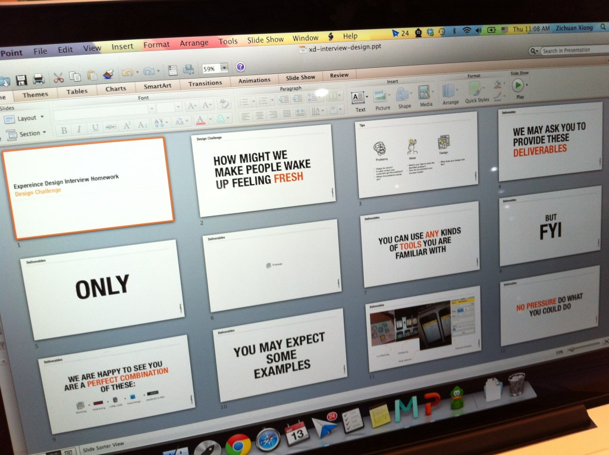
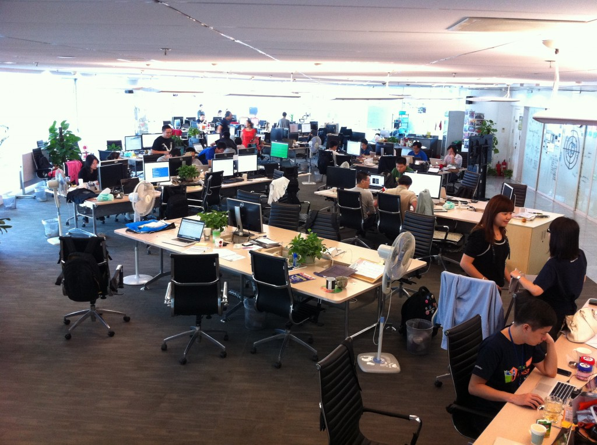
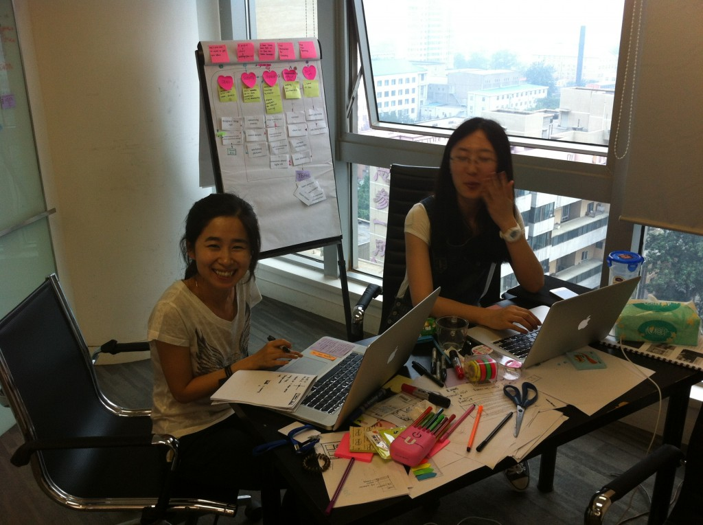

据说ThoughtWorks的面试被Buisness Insider排到了世界第一的难度，也许那是针对程序员的，回忆起当年我的面试，似乎没有传言中那么苛刻，其实我更享受其中的过程——它不是一个让你充分表达“你有什么”的面试——更多的，它是一个令你着迷的脑力激荡，喜欢的人乐在其中，不喜欢的人觉得苛刻。
这便是我对TW面试的看法，到现在，我已经开始构建ThoughtWorks中国区的体验设计力量，我们希望这个面试过程能够挑选出能力胜任，且喜欢我们和我们喜欢的人，让他享受面试的过程，从面试开始就认为这是他想要的工作方式，而面试他的人是未来愿意一起快乐工作的同事。
完成一个设计作业
在最开始，如果我们觉得你的简历不错，我是说，一个能表达你设计能力的简历——在我们看来一份充分通过信息设计的简历是第一个令我们眼前一亮的东西；我们会发给你一个作业，在这个作业里包含了一个设计挑战，你被要求用任何你熟悉的方法去接受这个设计挑战。

我们希望看到你对问题的思考过程，到底有谁有这样的问题？她在什么情况下会有这样的问题？她还有没有其他更值得解决的问题？我们在乎的并不是这些问题的答案，而更多是你如何问这些问题，以及这些问题的解答过程。
我们希望看到你的设计结果，而这个结果应该是慢慢变清晰的，如果可以的话，展现你从手绘、信息设计、信息架构、视觉设计、甚至前端代码实现全面的能力。
我们希望看到你对设计包装，设计师任何产出的东西都应该是规整的和有设计感的，乱糟糟的将手稿、设计图、线框图堆在压缩包里都是会减分的，相信如果我们是你的客户，你会不会这样交付你的设计结果？请用最简单易懂的几页让我们了解你的设计思想，好的展示文档都会是加分项。
把作业发给我们，一般我们不会限定你时间，由你自己决定，但是请遵守你的承诺。作业通过我们将邀请你来到我们的办公室进行下面环节的面试。
办公室面试
面试的底线是寻找到胜任的人，同样重要的是找到互相喜欢的伙伴，尤其是设计师的职位，我们把“互相喜欢”放在非常高的位置。我们的办公室面试也分很多的环节，但是不要担心，很多时候这个面试都会是有趣的，在中午的时候，如果我们邀请你打两把游戏，请不要拒绝。

考考智力和逻辑
每个加入ThoughtWorks的同学都需要接受智力和逻辑考试，智力题大概100道，你需要在12分钟左右的时间内完成，绝大部分的题目都类似脑筋急转弯，它考验的是你在有时间压力的情况，对于密集的问题有没有从容应对的能力，这个考试会使用英文完成，我们会考虑非母语国家语言能力不足的问题。
逻辑通常也是我们需要考察的问题，在未来面对客户的时候，错综复杂的工作内容需要你胜任的逻辑能力，在我们看来一个体验设计师是信息设计的工匠，逻辑能力是必不可少的一环。这个环节也将会是英文。
我们做你的风投
一般我们不会因为智力和逻辑考试结果不高而终止面试，相反过高和过低有时也会让我们对你产生好奇。接下来，我们将扮演你的风投，你需要使用30至45分钟的时间去向我们宣传你作业中的设计——把我们当成风投，让我们买单。
我们考察你的产品思维，看看你能不能在短时间内具备“征服客户”的潜质，你可以使用任何方式宣传你的产品，我们为你准备了纸笔甚至电脑，如果需要。
你会面对很多刁钻的问题，甚至让你紧张的挑战，我们希望看到你当压力出现时的应对情况。为了不让你崩溃，我们一般由一名“施压者”（其实大部分情况就是我）和一名“减压者”一起完成这个环节的面试。
让我们都喜欢你
大部分时候，不出意外的，面试者在这个时候都会接近崩溃，如果你没有这种感觉，那么我们会很开心。为了帮你缓和这种紧张的气氛，我们会做一次文化面试（Culture Interview），一般我们会选择一个让你更舒服的地方，召集所有在办公室设计师坐下来，聊聊和工作无关的事情，包括你的生活、爱好、厌恶的事情、八卦，我们也会跟你分享我们有趣的故事。
这个过程，就是看看我们是不是互相喜欢，你的热情、正直、理想主义、幽默、才华、自然熟、细心都会成为我们喜欢你的理由。
角色扮演的设计挑战
休息过后，你将经历一个最大的挑战，这也是整个面试最重要的部分，你被要求和我们其中设计师一起，完成一个由另外一位设计师扮演的客户所提出的“设计挑战”。
为了让这个过程变得随机和真实，和你一起结对的设计师也不知道设计挑战的题目；这些题目每次都在变化，例如：爸爸为女儿的成长可以做些什么；通过饮料瓶为你的学生设计一个10节课的课程；为香蕉共和国设计一个应用宣传自己的国家。

面试过程可能是这个场景
你需要和客户进行沟通，挖掘他的真实需求；你可以使用彩笔、卡片、贴条白板等各种设计工具辅助你的设计过程；然后你需要和结对的设计师一起工作，进行设计；最后你需要向你的客户展示你们的设计成果。
最有意思的部分是面试官在这个过程中也完全是探索的过程，他们也在享受和你一起脑力激荡的过程。
让那些怪咖喜欢你
我们并不是IDEO或者Frog这样的纯粹设计公司，这里的90%都是“移动个文件都要打开terminal输命令行完成”的程序员，我们的项目90%也跟软件交付相关，更重要的是，你们绝大部分时间要和他们坐在一起工作，这意味着，你至少不能把这些“怪咖”讨厌你。
我们会把你和某个开发人员关在一个屋子里聊天，我们根本不在乎你们聊什么，可能你们也不知道聊什么，你也许可以教教他们如何把东西对齐！对尼玛齐！如果你俩相对无言各自数秒，我们就酌情考虑你的结果了。
见见领导
这是最轻松的一部，就是见一个领导，这些酱油们每日的职责就是给你讲讲公司的规划，记住玩儿命点头，偶然眼中表现憧憬和向往的基调，问个例如：“新兴市场的经济放缓对软件定制开发业务有何影响”之类的非常有经济头脑和酱油潜质的问题，他们会更加欣赏你。
不要担心，这些领导都是亲和的，除了某个时刻跟你说作为咨询公司ThoughtWorks为什么要求每个员工每年保证四个月总出差时间。
写在最后
这大概就是面试的全过程，基本需要一天，如果忙不过来，可能需要几天完成。正如之前说的，我们把面试当成第一次约会那样重要，我们反对群面、反对一问一答、反对刁难，我们希望这个过程是充满乐趣和挑战的，因为你面对的是一个在不断追求挑战中获得乐趣的工作——因为难，才好玩。
如果你喜欢我们的方式，天生亲近那些有些理想主义、正直善良、追求挑战的人，好好设计一下你的简历，做一做我们的作业，和我们一起做一次有意思的面试吧。